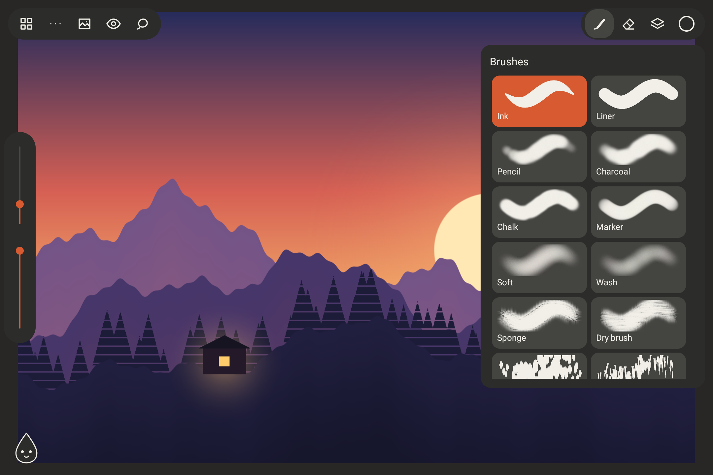
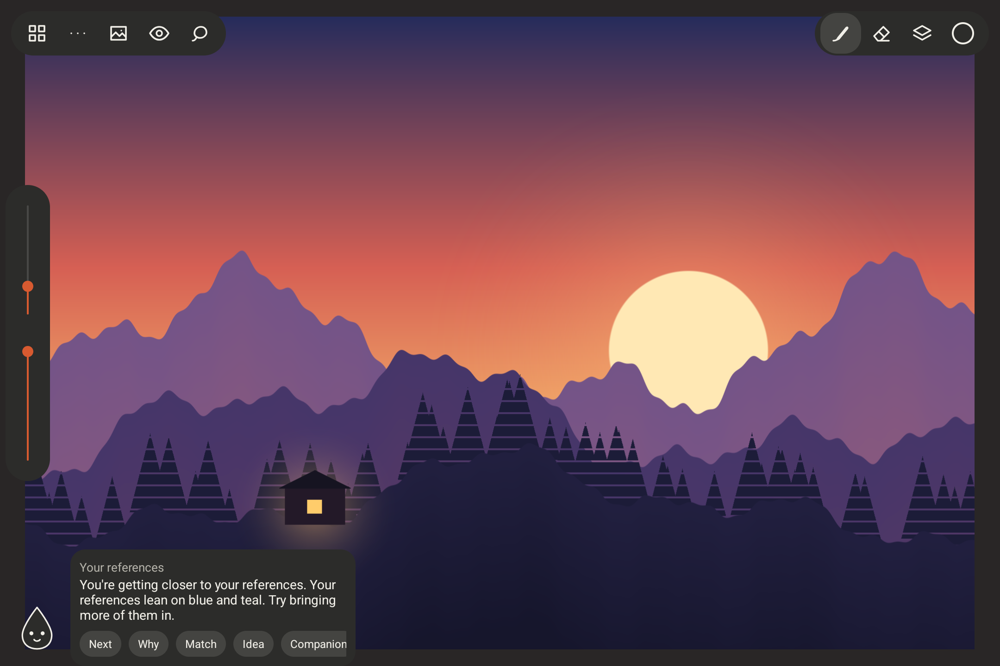
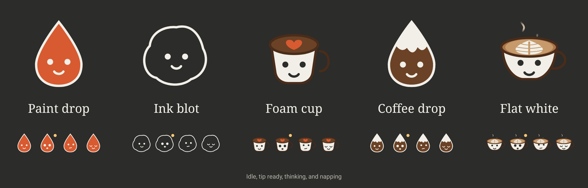
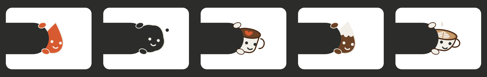
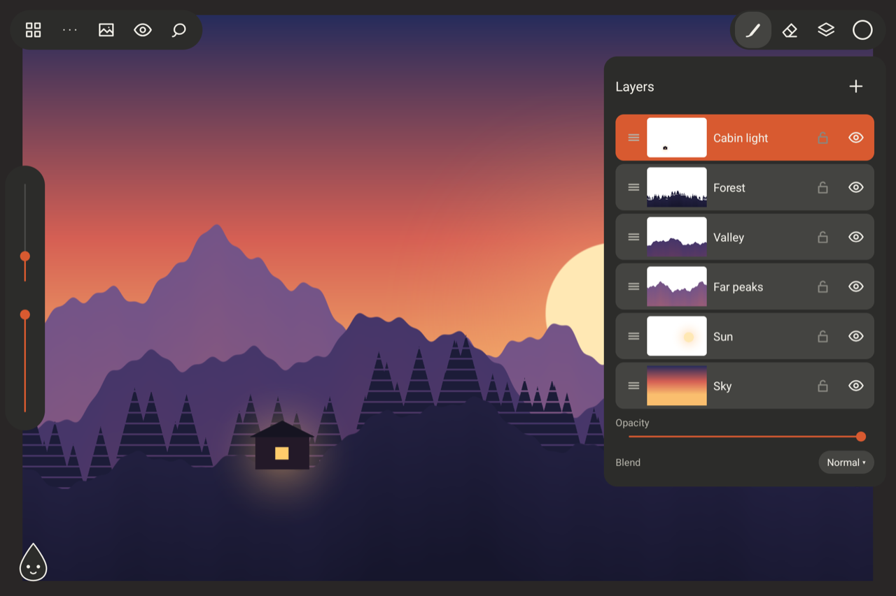
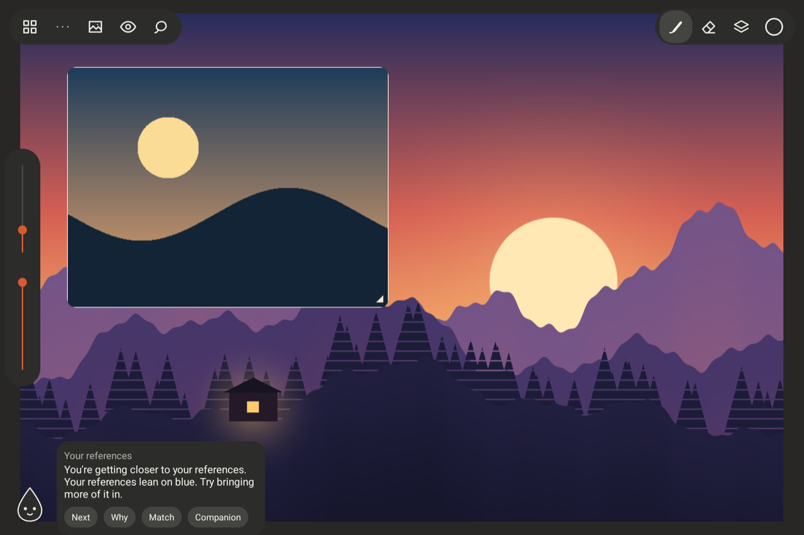
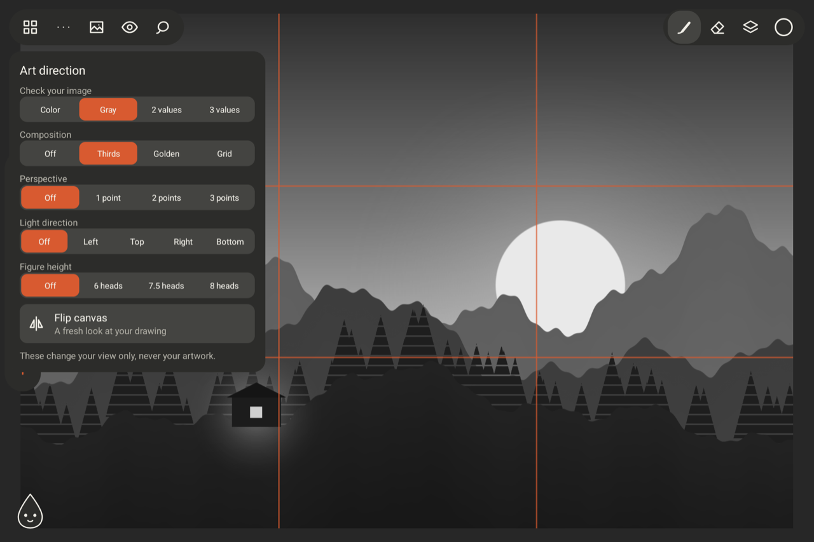
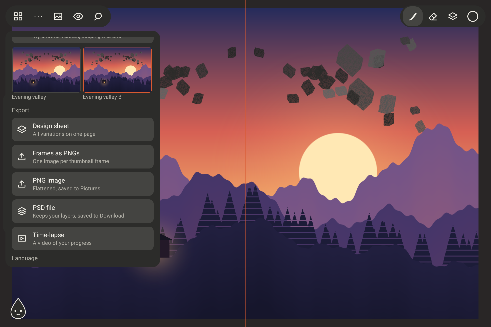
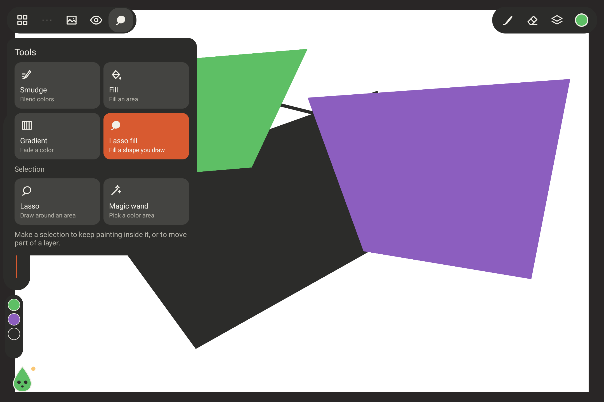

Sixteen brushes
Pencils for sketching, paints and textures, scatter brushes for leaves and rocks, and your own custom tips.
Cappuccino is a free illustration app for Android tablets. A tiny friend keeps you company while you paint, and leaves a note when it has an idea.
Your companion
It rests in a corner of your canvas and never interrupts. When it has a thought, a small dot appears. Tap it, or keep drawing.

Notes come from image analysis on your tablet, never from generative AI.
Five companions
A paint drop, an ink blot, a foam cup, a coffee drop, or a flat white that keeps steaming. When you'd rather be alone, they hide behind the toolbar and peek.


The studio
Low-latency pen drawing with pressure and tilt, in an interface that fades while you work.

Pencils for sketching, paints and textures, scatter brushes for leaves and rocks, and your own custom tips.

Masks, clipping, blend modes, groups, and one undo history for everything.

Float, zoom, gray out, or pin a reference for tracing, and pick colors straight from it.

Perspective guides, value views, composition thirds, light direction, and live symmetry.

Lettered variations, six color variants at once, and design sheets ready for a client.

Frames with onion skin, time-lapses, layered PSD, PNG, and stickers with a die-cut border.
Your art stays yours
Cappuccino doesn't connect to the internet at all. Your drawings, references, and the companion's thoughts all stay on your tablet. Privacy policy
Keep it free
Cappuccino has no ads and never will. If it makes your drawing time a little nicer, a coffee helps me keep building it, one companion at a time.
Built for Android tablets with a pen. Until then, you can build it yourself from the source.